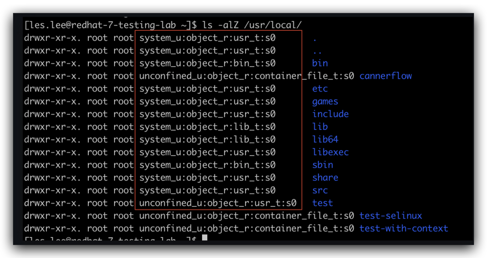
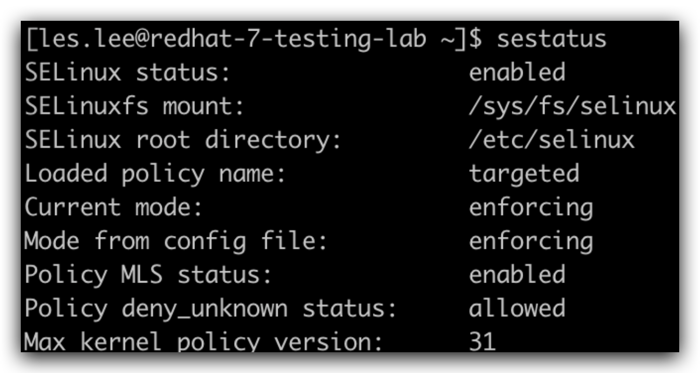
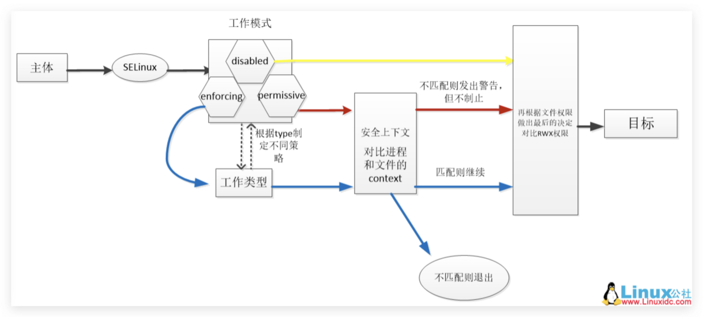
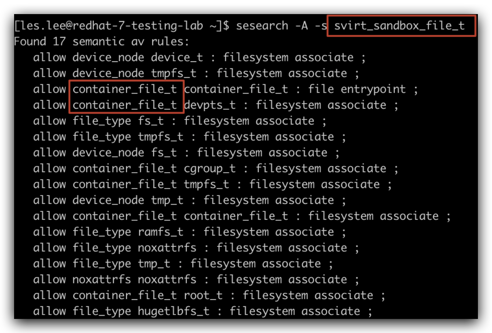

# 關於 SELinux Policy
最近工作上需要研究一下 Red Hat 這款 Linux，在其上進行 k8s 安裝時，發現其對於 service 的檔案存取跟 Ubuntu, Debian 這類的 Linux 有些許不同。其中多了一層叫做 SELinux 的 Policy 作為權限存取的保護，因此花了一些時間好好的來了解一下這個 SELinux Policy 是什麼東西。
# 簡介
SELinux 全稱 (Security-Enhanced Linux) 是一個 Linux core 的 module ，算是一個 Linux 的安全子系統，主要存在 fedora base 的 Linux 中。現在以 CentOS, Red Hat 這幾款 Linux 比較常見。
SELinux 主要作用是「最大限度地減小系統中可訪問的資源」、能不開放的就不開放（最小權限原則）。
為什麼會需要 SELinux 呢？主要是基礎的 Linux 在檔案存取的權限控管上總有一些不足之處。
# 一般 Linux 權限管理的問題
一般 Linux 權限管理通常只有兩個級別： root 與 user ，當中難以實現更小的權限管理概念。但是這兩個級別的權限又常常會互相賦予。
例如 Linux 允許用戶或程式將不安全的檔案權限賦予他人，或反過來存取系統正在正常運作下「無須存取的部分」。
- root 無法控制 user ： user 可以把「誰都可以讀取的權限」給予敏感的檔案 ex. ssh 金鑰常放置在～/.ssh 目錄。
- process 可以更改安全性的屬性：每位 user 的郵件應該只供此用戶讀取，但是客戶端的 application 有能力將其改為誰都能讀取。
- process 可以繼承用戶的權限：我們假設某個 service 被木馬程式所佔用，他可能存取 user 的 ssh key 或是其他不該擁有權限存取的檔案。
簡言之，傳統的 Linux 無法簡易地實施最小權限的理念。很多由 root 啟動的 process 最終都會使用「受限制的用戶身份」來運行、存取用戶的檔案；有些則會在 chroot 的情況下執行。
# SELinux 解決方案
SELinux 預設使用 enforcing 情況下，一切的存取要求都會先被拒絕。
接下來使用一系列的「例外政策」來允許系統的每個元素 (service, process, user, …etc) 運作所需要的存取權。 當一個元素嘗試存取或修改他不須用的檔案或資源的時候，她的請求就會被拒絕。 並且這個行為會被記錄下來 (預設放置在 /var/log/audit/audit.log )。
# SELinux 的工作原理
SELinux 主要有三大部分
工作模式
- enforcing：強制模式，依據設定來限制檔案資源存取。
- Permissive：寬容模式，不限制檔案資源存取，但仍會依據設定檢查並記錄相關訊息。
- Disabled：停用 SELinux。
工作類型
- strict：每個 process 都受到限制
- targeted：限制大部分網路的服務 (Red Hat 7 default 是這個)
- minimum：限制部分的網路服務 (CentOS 7 default 是這個)
- mls：多級安全限制
安全上下文 (Security context)
在 SELinux 中，我們可以使用 ls -Z 或 ps -eZ 查看到檔案目錄或是 process 的 security context.
process 或 檔案目錄的 security context 必須對應才能存取。

我們可使用 sestatus 查看目前 SELinux 的工作狀態

SELinux 會依照「工作模式」、「工作類型」制定不同的策略，並且去比對 process 或是目錄檔案的 security context ，如果對應才會去比對 Linux 的 RWX 權限，否則就 reject。

一般來說，我們該隨意地去更動「工作類型」或「工作模式」。
因此主要都是修改目錄檔案或是 process 的 security context 來符合 SELinux 規範。
security context 主要以以下 5 個字段利用「：」做為分隔符號構成。
分別代表的涵意如下：
- user：身份識別；「undefined_u：不受限的用戶或文件」、「system_u：受限的 process 或文件」
- role：角色 ；「object_r：文件」、「sytsme_r：process 或 user」
- type：代表數據類型，決定何種類型的 process 可以訪問何種的文件
- sensitivity：安全級別，s0 最低級別 （只有在 mls 類型下會用到）
- category：劃分的不同分類
另外，我們可以藉由安裝 setools-console.x86_64 來獲得操控 selinux 的指令：
- seinfo
- sesearch
sudo yum install setools-console.x86_64
藉由以下幾個指令，我們可以得知 SELinux 有哪些種類的字段。
seinfo -u # 查詢所有的 user 字段 (8個)
seinfo -r # 查詢所有的 role 字段 (14個)
另外我們可以使用 sesearch -A 查詢什麼類型的 process 可以什麼 type 的 file。
sesearch -A -s [type] # 查詢 type 的 process 能夠讀取的文件類型

# 修改當前的 context
可以使用 chcon 手動修改 security context 。
chcon [option] target
chcon -t # 修改 context 的 type
chcon -u # 修改 context 的 user
chcon -r # 修改 context 的 role
chcon -l # 修改 context 的 sensitivity level
chcon -R # Recirsive target 下所有目錄結構修改
# 結語
SELinux Policy 是一個增強 Linux 安全性的措施。
我們應該盡量確保一個 process 僅能存取其所需要的檔案與目錄結構。
另外，我們若要開放存取也應該使用 chcon -t 修改標籤的方式去將目標檔案對 process 類型做匹配，而非直接暴力修改 chmod 或是 chroot 開放資源的權限。
這篇文章只是很基礎的 SELinux 介紹，以下的參考資料會更加完整與詳細，有興趣可以就這幾篇文章查看，相信會有更完整的認識。
# 參考資料
- CentOS Wiki — SELinux
- Linux 公社 — SELinux
- 每日頭條 — 一文徹底明白 SELinux
- Red Hat — CHAPTER 2. GET STARTED PROVISIONING STORAGE IN KUBERNETES
- Red Hat — CHAPTER 6. DOCKER SELINUX SECURITY POLICY